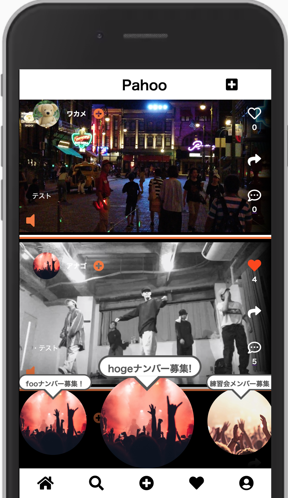
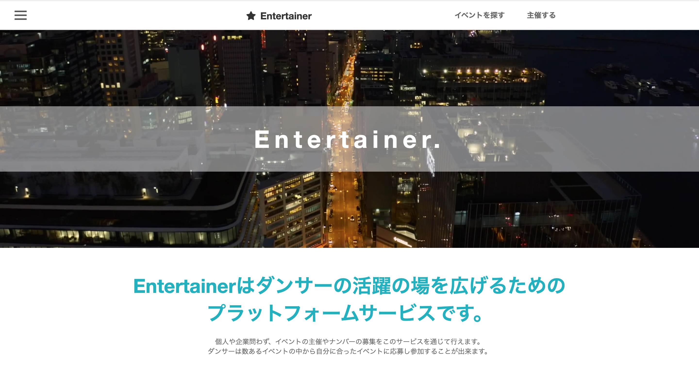
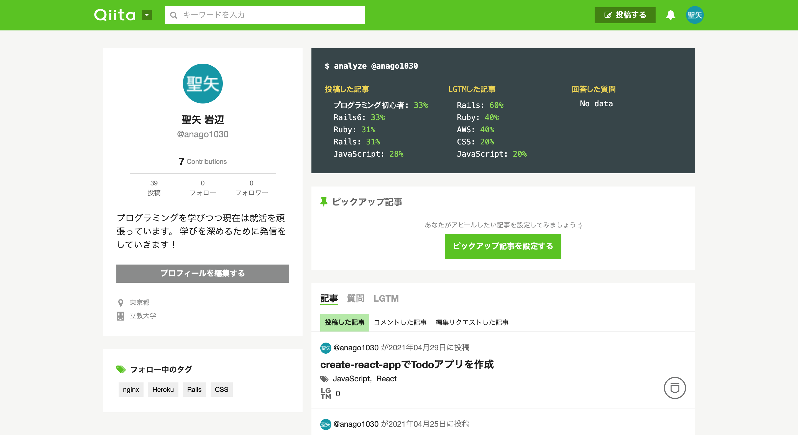

about me
パーソナル情報
岩辺 聖矢(いわなべ せいや)
1995年10月30日生まれ(25歳)
経歴
学生時代は300人規模のダンスサークルにてマネージャーとして尽力しました。
組織内満足度を上げることを最大の目標として掲げ
メンバーと蜜にコミュニケーションを取ることで信頼関係を築いていきました。
結果的に、組織運営の要である練習計画をイベントごとに完成させ
マネージャーという責任感が伴う役職を一年間やり遂げました。
プログラミング学習期間:2020年7月~2021年6月現在
学習期間の中でプログラミングスクールに3ヶ月間在籍し、Githubを用いた
スクラム開発でECサイトを作成しました。(下記で紹介しているアプリは
スクールのカリキュラム外で作成したオリジナルの作品です)
どんなエンジニアになりたいか
顧客志向をもち、チーム開発を最大化できるエンジニア
顧客志向
-----------------------------------------------------------------------------------サービスの先には必ず顧客が存在します。その顧客にとって利益は何かを
考え抜き、ビジネス的にも貢献できることがエンジニアを目指します
チーム開発の最大化
-----------------------------------------------------------------------------------エンジニアの仕事は個人で完結せずチームで成果をあげる場面が多いと思います。
チームメンバーへのリスペクトを忘れず、ポジティブな影響を与えることで
チーム開発を最大化できるエンジニアを目指します
Ruby on Rails

Pahoo
制作期間： 35日
アプリの概要
- ダンサーに特化したSNSアプリケーション
- ユーザー同士のマッチングやコンテンツを絞り込んで検索可能
- 募集機能により練習仲間を募ったり、イベントを主催したり参加できる
工夫したポイント
- 動画の再生/停止、音声のon/off、プログレスバーの表示などをJavascriptで実現
- ユーザーが相互フォロー時にダイレクトメッセージを送れるようにマッチング機能を実装
- 通知機能の実装(投稿に対してのコメントやいいね、フォロー時やDM送信時)
- コメントやいいね機能を非同期通信にすることでUXを向上
- Twitter APIを使用し、投稿をTwitterに共有
- Rspecでの単体テストコード
- インフラにAWSを使用し、独自ドメインを取得

Entertainer
制作期間： 66日
アプリの概要
- 初めてRailsでCRUD処理を実装して制作したアプリ
- ダンサーと企業をつなぐマッチングプラットフォーム
- 個人、企業問わず様々なイベントを主査可能
- ダンサーは興味のある案件に参画できる
工夫したポイント
- タブの実装により１つのページにイベントやユーザーの情報をまとめる
- 申し込みに多いイベントを注目のイベントとして最上部にスライドで表示
- ユーザーがイベント情報にアクセスしやすいようにタグの絞り込み機能を実装
- ローカル環境にDockerを導入
- インフラにAWSを導入し独自ドメインを取得
- Rspecでの単体テストコード
React
写真検索アプリ
制作期間： 3日
アプリの概要
- 無料のストックフォトサイトのUnsplashのAPIを用いた写真検索アプリ
- 検索バーにテキストを入力すると関連した写真を10件表示する
工夫したポイント
- 外部APIを取得しReactアプリに実装
- Hooksの使用(useState,useEffect)
Todoアプリ
制作期間： 7日
アプリの概要
- Reactで作成した初めてのアプリケーション
- Todoの追加、完了、削除、ロールバック機能を実装
工夫したポイント
- Hooksの使用(useState,useEffect)
- 機能ごとにコンポーネント化をしてコードの可読性を向上させた
- Todoは5つ以上追加できないようにバリデーションを設定
Other

Qiita
Qiitaにてアプリの作成過程での学びやインプットした内容を発信しています。
2020年11月27日~2021年5月現在までで累計で40記事執筆しました。
使用した技術やツール
- AWS(EC2,IAM,S3,VPC,Route53,)
- Nginx(Webサーバー)
- Unicorn(アプリケーションサーバー)
- Mysql(ローカルのデータベース)
- MariaDB(本番環境のデータベース)
- Capistrano(自動デプロイ)
- Docker
- Prettier
- RuboCop
- Rspec(テストコード)